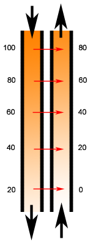

Copywriter: Essays and Stories
Copy Writing: Essays and Stories
Anyone who is serious about writing must do it every day. It must become a habit because it is not the easiest of processes. Not everything I write is destined for general consumption, but I have selected some to post here for you to read. I hope you enjoy them.
Start my writing for you today
. . . also, visit my Blog as well. There is a lot more of my writing to be seen there.
Articles and Stories
- Portal Systems in Nature and the Human Organism.
- A Savory Sensation by Any Other Name, Umami.
- When is Genetic Engineering Different from "Natural Husbandry"
Portal Systems in Nature and the Human Organism
Common understanding is that the course of blood in the body is from arteries to capillaries, to veins, and back to the heart. This circuit makes sense to most people in an intuitive sense as the prime transport system of the body. Students of anatomy and physiology soon become familiar with other kinds of transport within the body. The lymphatic system may be familiar, but the portal system is apt to draw a blank for, many persons.
 A portal venous system is an exceptional structure in which, after a first capillary bed, a coalescence of veins collects blood flow and
directs it to a second capillary bed before delivering blood to the systemic veins for return to the heart and another course around the body.
A portal venous system is an exceptional structure in which, after a first capillary bed, a coalescence of veins collects blood flow and
directs it to a second capillary bed before delivering blood to the systemic veins for return to the heart and another course around the body.
The function of this structure is hinted at by it portal designation, where portal is from the Latin, Porto; I carry. The portal veins are a perfect design to carry some substance from one place to another without having to traverse the whole systemic circulation. Reasons of amount (volume or concentration), chemical nature or process may require exclusion of these substances from systemic exposure. They are usually in solution but maybe suspended or carried by proteins. Whatever the reasons or the form, their distribution is to be controlled. Some of those chemical substances interfere with function in general circulation. Many products if digestion such as amino acids from protein, function with little alteration, as messengers like thee neurotransmitters in lee brain or some hormonal messengers. A message could be lost in the background noise if a relatively high level of lee messenger was always present. The well-known" Chinese Restaurant Syndrome" is a model for this. Monosodium glutamate or MSG is the salt of glutamine acid. Glutamate serves as a neurotransmitter at some nerve endings (synapses) in the brain and on muscles in blood vessel walls. Persons very sensitive to excess levels of monosodium glutamate, a flavor enhancer, experience nervousness and flushing and a rapid heart rate.
The archetypical portal system is the hepatic portal system. Arteries carry blood from the heart into the capillary bed of the wall of the intestine. There, the blood flow picks up products of digestion and carries them into the larger, portal veins. The portal veins all converge on the liver by its hepatic vein where it breaks into a second capillary bed. These capillaries distribute those products of digestion to the cells of the liver for processing and storage.
In cirrhosis and severe scarring in the liver things may go wrong. Impeded portal venous flow raises the portal venous blood pressure. Elevated pressure in the portal veins can force the substances of the hepatic portal system directly into the systemic veins, bypassing the liver. Such substances will have passed unprocessed, or at higher concentrations than usual, into the systemic environment. When persons have hepatitis-related damage this severe, they can have crises of delirium. These are a result of confused brain function from many false nerve messengers present everywhere at once.
In a similar fashion to the hepatic portal system, when a chemical message is for specific receivers only, a design involving a direct venous pathway is a viable solution. A portal venous system is present as the hypothalamic-hypophyseal (or pituitary) system. The pituitary is often spoke of as the master gland of the body; it controls the activity of many other glands, the thyroid, the adrenals, and the ovary or the testes.
In case you have ever wondered how the mind could communicate with the body, this is a place for it to happen. This portal system connects a capillary bed in the lowest part of the hypothalamus and a venous capillary bed in the anterior part of the pituitary gland. Nerve endings in the hypothalamus come from nuclei higher up in the brain. These synaptic terminations occur near capillaries so that the transmitter substances they secret enter the capillary blood, The blood is carried in portal veins where the transmitters serve a hormonal row and cause secretion of the anterior pituitary hormones into the Second capillary bed of this portal system. Systemic veins take the secreted pituitary hormones in the blood to the heart. The hormones then move throughout the body via the arterial vessels.
The volumes secreted by nerve ending (synapses) are not of the scale of secretion by glands. The hypophyseal portal system makes it feasible to get an effect from neurotransmitters in blood, which usually act only locally inside synapses. Because the volume of blood is small, and the course and destination of the blood tightly controlled it is possible to have a higher concentration of neurotransmitter (neurohormone) achieved in the second capillary bed. Thus, large-scale results can occur efficiently with the volumes secreted classically at nerve endings. Further, the arrangement has converted the electrical-chemical signals of the nervous system into hormonal messages for the body. We also avoided release of high concentrations of neurotransmitters into the systemic circulation.
In the sense of terminology, the portal system of the kidney is less straightforward. Some call the renal portal system an arterial portal system and other sources refer to this as a portal system only in non-mammals . When patterns (or designs in a generic sense) in nature provide a selective advantage they can be found repeated as a solution to analogous problems. This is the case with the renal portal system. Here, larger communicating vessels separate two capillary beds (or plexuses of veins) without return to the heart first. Criteria exist in humans for calling the vessel(s) leaving the first capillary bed arterioles. There are also situations that allow for their consideration as veins. For the discussion here, it is the pattern as a recurrent theme, which is important.
Arterioles from the heart via the renal arteries enter a plexus of vessels called the. Here some of the serum or non-cellular, non-protein containing part of the blood is forced under higher blood pressure (hydrostatic pressure) out of the vessels. This serum is a filtered fluid that enters the tubules of the kidney and moves towards the ureter and bladder. Meanwhile the blood with less fluid component moves by communicating vessels to another plexus or capillary bed. This second capillary bed is in close approximation to the filtered fluid, which contains only dissolved substances, water, salts, byproducts of metabolism, sugar, acidic substances.
Clearly, an organism needs to conserve water, sugar and some salts. Hydrogen ion, usually in excess, can be used to balance total body acidity (pH), if needed. Where the second plexus and the kidney tubules are in apposition, passive reclamation of substances lost in the filtrate occurs by osmosis and lowered hydrostatic fluid pressure. As well, active reclamation takes place with the expending of energy .
 Another pattern is also evident in the units containing the renal portal system (nephrons). This is the countercurrent exchange phenomenon. The concentration gradients of the substances reclaimed, are in reverse orientation. This allows reclamation of higher levels of substances even with passive diffusion across the walls of the vessels and tubules (osmosis). The exact mechanism of countercurrent systems is beyond what this article covers, but we see it often in nature and in manmade applications. It is an important example of reuse of successful concepts in nature as well.
We can see an interesting distinction with the renal portal system if when we ask what is been transported. In this case, the portal plexus moves blood that is more concentrated than systemic venous blood directly to where it will reclaim its constituents without, returning to the systemic circulation first. Further, the higher osmotic pressure, lower hydrostatic pressure and the countercurrent arrangement of flow are all employed to best advantage by their being part of a portal system.
Another biological setting illustrates the renal portal pattern in a more loosely organized structure. This is within the female reproductive system where we find a venous plexus between the ovary and the womb (or uterus). The economy of being able to deliver hormones at high levels directly to their target is apparent again in this collection of vessels. This plexus joins a capillary bed around the ovary with one in the uterus. There is much more cross-connection with the systemic circulation in this plexus than is typical of the portal systems we have already discussed.
In spite of the looser applicability of the term portal system there is in fact a transport of the hormones estrogen and progesterone from the ovary to the uterine lining (endometrium).
The tissues within the endometrium change throughout the menstrual cycle and throughout pregnancy under the influence of the ovarian secretions into this plexus. The resulting transport clearly has the same characteristics, of directness and higher concentration, as the other portal examples explored.
We can find even more portal systems, in both a strict and a looser sense of the term, described in humans as well as other mammals and in non-mammalian animals too. The theme is chemical transport in a relatively isolated sub-environment within an organism. The story is about a solution to a number of problems framed by the needs of this theme. It recurs because the needs dictate and effectiveness selects in the Darwinian sense, just like the cameral eye and many other examples.
I believe the beauty inherent in the natural reuse of patterns, in living things, is not overstated. It is among the more profound manifestations of the workings of the new field of evolutionary developmental biology. Readers interested in a more in depth appreciation can explore in Sean Carroll’s book and others. It is profound because it implies the self-organizing principle we see in emergent phenomena (complexity theory).
Portal Systems Notes and References:
1 http://www.medilexicon.com/medicaldictionary.php?t=89351renal portal system
Type: Term
Definitions: An arterial portal system, in which efferent glomerular arterioles receive blood from the capillaries of the renal glomeruli and carry it to the peritubular capillary plexus surrounding the proximal and distal convoluted tubules.
Synonyms: hypothalamohypophysial portal system2
2 http://en.wikivet.net/Lizard_Cardiovascular_System,10/20/2014 12:37 PM.
3 (a nice set of illustrative graphics can be seen at Wikispaces).
4 Carroll, Sean B., Endless forms most beautiful : the new science of evo devo and the making of the animal kingdom. New York : Norton, c2005.